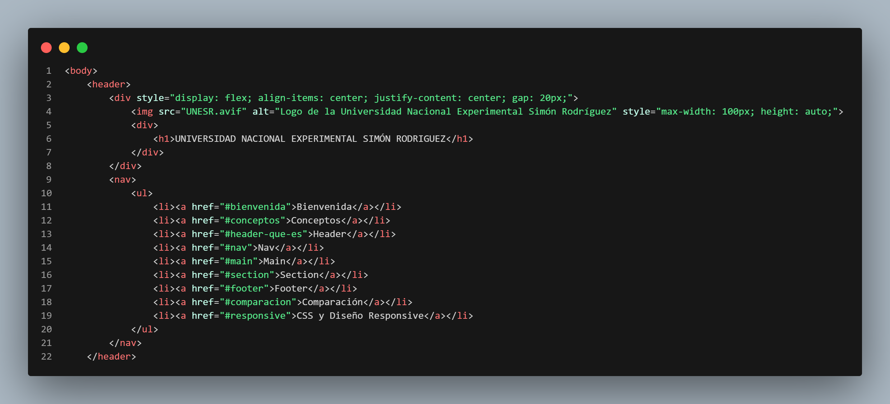
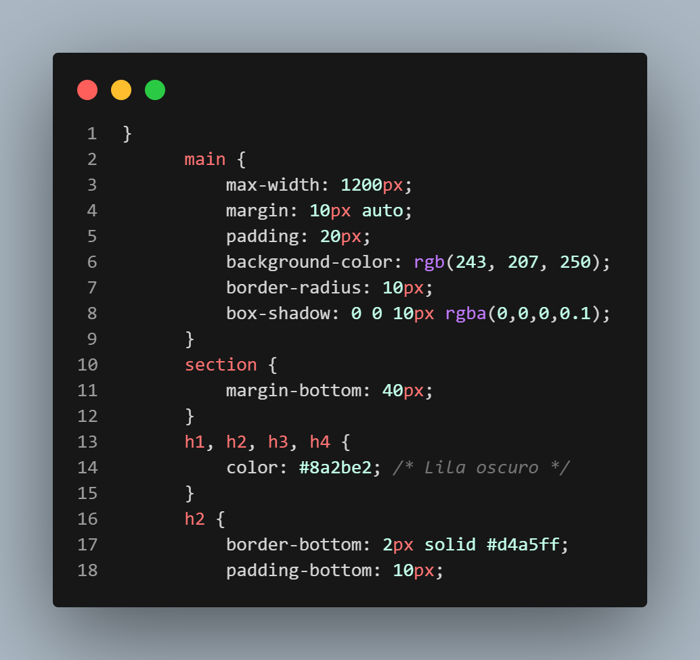
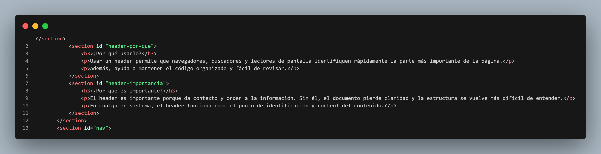

Nota Académica
En manuales administrativos, cada sección representaría un capítulo o una norma específica del reglamento.

<header>Es el punto de entrada. Su importancia radica en que contiene los elementos de identidad visual. En términos administrativos, es la "cara" del documento oficial.

<main>Aquí es donde vive la información principal y única de la página. Ayuda al SEO y a la accesibilidad.

<section>Divide temas largos en trozos digeribles. Cada sección debe tener su propio título descriptivo.

En manuales administrativos, cada sección representaría un capítulo o una norma específica del reglamento.
Para que la página se vea bien en celulares, usamos los prefijos:
sm: Celulares (640px)md: Tablets (768px)lg: Laptops (1024px)